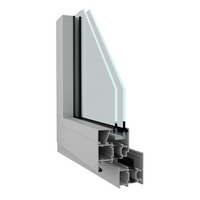

Aliminijum
"Aluminijumska stolarija je osnova modernog građevinarstva, koja svojim karakteristikama ispunjava zahteve tržišta u vidu kvaliteta, dizajna i postojanosti."

Aluminijum je materijal godinama dokazan po kvalitetu i istrajnosti. Zbog toga je ova stolarija jedna od najzastupljenijih na našem tržištu.
Krase ga izuzetna čvrstoća i otpornost na atmosferske uticaje, visoke temperature, pa upravo zbog toga se i preporučuje na našem podneblju. Nudimo vam tri vrste profila:
- Obični
- hladni profil
- te profil sa termo prekidom.
Estetski je izuzetno privlačna, a zbog specijalnih plastifikacija i nanošenja boja je izuzetno glatka i jednostavna za održavanje. Kombinovanjem ovih visokoefikasnih profila i niskoemisionog stakla sa gasnim punjenjem dobija se sistem koji vam pruža izvanrednu termo i zvučnu izolaciju.
Zahvaljujući ovim tehničkim karakteristikama aluminijumska stolarija vam donosi ogromnu uštedu energije. Zbog toga se i savetuje upotreba ovakvih dugoročnih rešenja. Dakle aluminijumska stolarija poseduje odličnu zvučnu i toplotnu izolaciju, izuzetnu čvrstoću i statičku stabilnost, jedinstven izgled i jednostavno održavanje.
Posedujemo širok spektar boja, nudimo vam aluminijum u svim bojama po RAL karti.
Prozori
Nudimo prozore klasičnog i okretno-nagibnog otvaranja. Okretno-nagibni sistem vam pruža mogućnost laganog provetravanja prostorija, a ujedno vrši funkciju i klasičnog otvora. Rade se u kombinaciji sa roletnom, komarnikom ili perzijanom, sve po vašoj želji.
U ponudi su jednokrilni, dvokrilni, trokrilni, itd... Sve zavisi šta je najbolje i najfunkcionalnije za vas.
Vrata
Nudimo balkonska vrata klasičnog i okretno-nagibnog otvaranja. Kao i kod prozora tako i kod vrata sa okretno-nagibnim sistemom imate dve varijante otvaranja. Klasično i ventus otvaranje (pogodno za provetravanje i cirkulaciju vazduha). Takođe se rade u kombinaciji sa roletnom, komarnikom ili perzijanom. Nudimo jednokrilna i dvokrilna balkonska vrata.
Posebnu pažnju posvećujemo vašim ulaznim vratima, koja će vašem domu dati potpunu sigurnost i novi sjaj. Posedujemo veliki izbor panela, tako da sve vaše ideje sprovodimo u stvarnost
Ostalo
Aluminijumski klizni sistemi: Koriste se kod zatvaranja većih površina i balkonskih prostora.Idealno rešenje za maksimalnu iskorištenost prostora i jednostavno korišćenje.
Aluminijumske ograde: Sve više su zastupljene ograde od aluminijuma. Postoji više razloga za to:izuzetno elegantan dizajn, jednostavno održavanje, ne korozira, nema farbanja i lakiranja. Dug vek trajanja.
Aluminijumski perzijani: Ukras vašeg doma koji služi kao zaštita od spoljnih atmosferskih uticaja. U sklopu sa vašim otvorima čini sistem savršene zvučne i termo izolacije. Imaju pokretne lamele, tako da sami podešavate nivo otvorenosti.
Aluminijumske staklene stene i pregradni sistemi: Zbog izuzetne čvrstoće i lakoće aluminijuma, staklene stene i pregradni sistemi od ovog materijala su idealni za velike površine poslovnih prostora i objekata.